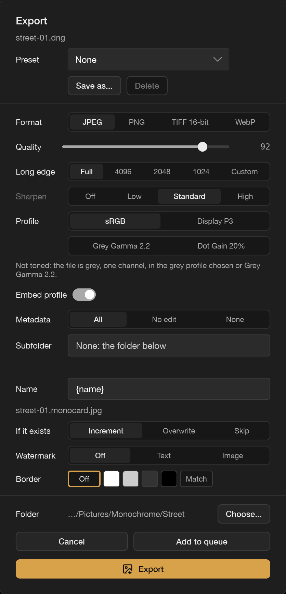

Export
An export writes your photo as a new file, with its edit. This chapter covers the Export sheet, grey and color files, the queue, and the paper proof.
Open the sheet
Click Export... at the bottom of the right pane, press Ctrl+Shift+E, or right-click a photo and choose Export.... With two or more photos selected, each one is exported with its own edit.
After an export from the sheet, Ctrl+E exports again with the same choices, and the sheet does not open.


Grey or color
| The photo | The file | The profile |
|---|---|---|
| Not toned | One grey channel | Grey Gamma 2.2 or Dot Gain 20%. With another choice, Grey Gamma 2.2 |
| Toned | RGB | sRGB or Display P3. With another choice, sRGB |
A photo is toned when an amount in Toning is over 0. The line under Profile says which file you get. Use Grey Gamma 2.2 for screens, and Dot Gain 20% when a printer asks for it.
The rows of the sheet
| Row | Choices | Default | What it does |
|---|---|---|---|
| Preset | Your presets | None | Sets all the rows |
| Format | JPEG, PNG, TIFF 16-bit, WebP | JPEG | JPEG is the smallest. TIFF 16-bit keeps the most tones. The others are 8 bits |
| Quality | 50 to 100 | 92 | For JPEG only |
| Long edge | Full, 4096, 2048, 1024, Custom | Full | The longer side in pixels. A photo is never made larger |
| Sharpen | Off, Low, Standard, High | Standard | Sharpens after the picture is made smaller. At the full size it does nothing |
| Profile | sRGB, Display P3, Grey Gamma 2.2, Dot Gain 20% | sRGB | See Grey or color |
| Embed profile | On, off | On | Writes the profile in the file |
| Metadata | All, No edit, None | All | The camera's data and the edit, the camera's data, or nothing |
| Subfolder | A name | Empty | A folder beside each original. It wins over Folder |
| Name | A pattern | {name} |
The name of the file. See Names |
| If it exists | Increment, Overwrite, Skip | Increment | See Existing files |
| Watermark | Off, Text, Image | Off | A mark over the picture |
| Border | Off, four greys, Match | Off | A band around the picture |
| Folder | Choose... | The last one chosen | Where Export writes |
Watermark
Choose Text and type a line in White or Black, or choose Image and a PNG file. Click a square of the grid to place it. Size goes from 1 to 50% of the long edge, Margin from 0 to 10%, and Opacity from 5 to 100%. In a grey file, the mark is grey.
Border
Click White, light grey, dark grey, Black, or Match. Match is the mean tone of the picture. Width goes from 0.5 to 25% of the long edge. The border is added outside the picture, so the file is larger. The window does not show it.
Names
| Token | Becomes |
|---|---|
{name} |
The name of the original |
{seq} |
The number of the photo in the export. {seq:101} starts at 101 |
{date} |
The day it was taken. {date:%Y%m%d} sets the form |
{camera} |
The camera |
In the folder of the original, the file is IMG_0001.monocard.jpg, so it never takes the name of the camera's JPEG.
Existing files
- Increment writes
IMG_0001-1.jpgbeside the file. - Overwrite replaces it. Monocard lists the files first, and asks.
- Skip writes nothing.
Presets
A first start has four presets:
| Preset | What it writes |
|---|---|
| Grey JPEG | JPEG, quality 92, Grey Gamma 2.2 |
| Grey TIFF | 16-bit TIFF, Grey Gamma 2.2 |
| Toned JPEG | JPEG, quality 92, sRGB |
| Web | JPEG, quality 85, 2048 on the long edge, sharpened |
To make your own, set the rows, click Save as..., and type a name. (edited) shows when the rows are no longer those of the preset. Delete removes the preset.
Stop an export
While several photos are exported, Export... becomes Stop export. Click it or press Esc to stop after the photo in hand.
The queue
Add to queue keeps the photos, their edits as they are now, and the rows of the sheet. Nothing is written yet. To write them, open the sheet and click Export the queue. Clear empties the queue, after it asks. The queue stays when you quit.
Paper proof
A paper proof shows on the screen how the picture looks on a paper, with its white and its deepest black. In FINISH, open View and proof and choose Matte, Baryta, or Newsprint in Paper proof. Off is the default. The papers are typical values, not a measurement of one product. The proof does not change the file.
Edit in another app
Add an app in Settings..., Editing, Edit in. Then right-click a photo and choose Edit in.... Monocard writes a 16-bit TIFF beside the original and opens it in the app.
You can also export from the command line.